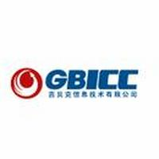
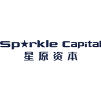

部分项目：
i挑战星球CP后台UI/UX的设计（2018.05-至今）
负责整个后台系统的设计工作，优化用户体验，使用户留存率提升了300%；并缩短了项目组开发所需的时间，保证每个月都上新一个版本，目前已迭代了12个版本。当然在工作中也会遇到很多问题：由于前期对后台系统的不了解和视觉上的短板，导致产出物不理想等；所以在前期我对大量的后台系统（例如：鲸打卡等）进行了研究，并通过业余时间进行视觉的填充，最终使项目顺利进行。
高级交互设计师

上海联蔚
信息科技有限公司
进行产品的需求讨论以及用户调研，协助产品经理完成功能需求的梳理；根据PRD文档进行交互原型的输出以及交互说明的撰写；并对产品后期进行用户体验的优化和可用性测试；改良产品，提升产品用户体验度。
部分项目：
兴业证券优理宝APP设计（2017.09—2018.05）
负责优理宝整个产品的设计工作，优化用户体验，使产品的使用量从30万增加到了100+万，提高了300%；反馈也有了很好的效果，出现问题的几率也降低了40%左右；同样，在设计过程中遇到过交互体验与视觉体验上的冲突，在这种情况下，经过和同事共同沟通，让同事作为用户进行体验，争取他们的反馈，进行在交互和视觉上修改来达到平衡。
交互设计师& P M

上海吉贝克
信息技术有限公司
进行用户调研以及产品需求整理，归纳PRD文档，根据需求文档进行交互原型设计，沟通确认产品的交互以及业务逻辑关系，UI视觉界面设计，输出高保真页面以及图标等相关元素；公司网站设计优化、web前端代码的编写。
部分项目：
星原乐居APP（2015.10-2016.07）
该产品是一款为物业公司、业主量身定制的，帮助业主解决日常生活中所遇到的问题，为业主的日常生活提供便利，为物业提供全面的小区信息与有效管理途径的一款物业服务性产品。
在该产品开发过程中，我主要负责完成整个需求分析和设计流程，通过需求分析，罗列产品功能和定位，该产品为物业公司提供一个良好的管理平台，同时为住户提供了线下娱乐休闲购物的场所。
视觉&交互设计师

北京星原共创
资产管理有限公司
参与产品规划构思、产品概念传达和创意过程、交互原型设计以及RPD文档的撰写；分析业务需求，并加以分解归纳出产品人机交互界面体验设计需求；集合可用性测试结果，完成界面交互行为和功能的改良，提高产品的易用性。
部分项目：
i挑战星球CP后台UI/UX的设计（2018.05-至今）
负责整个后台系统的设计工作，优化用户体验，使用户留存率提升了300%；并缩短了项目组开发所需的时间，保证每个月都上新一个版本，目前已迭代了12个版本。当然在工作中也会遇到很多问题：由于前期对后台系统的不了解和视觉上的短板，导致产出物不理想等；所以在前期我对大量的后台系统（例如：鲸打卡等）进行了研究，并通过业余时间进行视觉的填充，最终使项目顺利进行。
高级交互设计师
上海联蔚
信息科技有限公司
进行产品的需求讨论以及用户调研，协助产品经理完成功能需求的梳理；根据PRD文档进行交互原型的输出以及交互说明的撰写；并对产品后期进行用户体验的优化和可用性测试；改良产品，提升产品用户体验度。